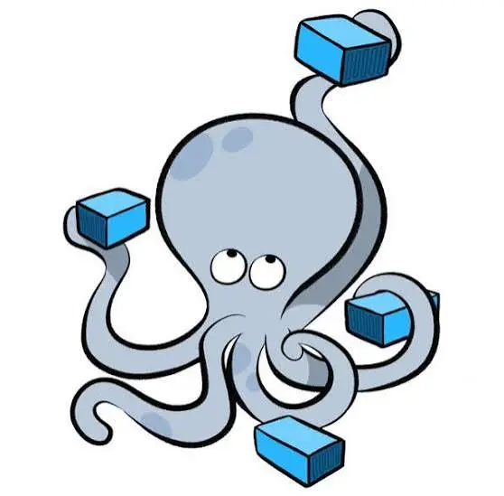

¿Qué es un contenedor?
Un contenedor Docker es una instancia ejecutable de una imagen. Permite ejecutar una aplicación junto con sus dependencias dentro de un entorno aislado.
Imagen vs Contenedor
Imagen
- Es una plantilla para crear contenedores.
- Contiene la aplicación y sus dependencias.
- No cambia mientras se utiliza.
Contenedor
- Es una instancia de una imagen.
- Se puede iniciar, detener, modificar y eliminar.
- Ejecuta la aplicación.
Imagen > Contenedor > Aplicación ejecutándose
¿Qué tiene un contenedor?
Un contenedor puede incluir:
Aplicación:
El programa que queremos ejecutar.
Dependencias:
Librerías y herramientas necesarias.
Aplicación:
El programa que queremos ejecutar.
Configuración:
Variables de entorno y otros parámetros.
Sistema de archivos:
Archivos necesarios para que la aplicación funcione.
El contenedor no necesita llevar un sistema operativo completo, lo que ayuda a que sea mucho más ligero que una máquina virtual.
Ciclo de vida
Create:
Se crea el contenedor.
>
Start:
Se inicia.
>
Running:
La aplicación esta ejecutándose.
>
Stop:
Se detiene.
>
Remove:
Se elimina el contenedor.
Con docker run, normalmente se crea y se inicia el contenedor directamente.
Comandos básicos
| Accion | Comando | Descripcion |
|---|---|---|
| Crear y ejecutar | docker run nginx | Crea un contenedor a partir de la imagen nginx y lo inicia. |
| Ver contenedores activos | docker ps | Muestra los contenedores que están ejecutándose. |
| Ver contenedores inactivos | docker ps -a | Muestra los contenedores. |
| Detener | docker stop nombre_contenedor | Detiene un contenedor que está ejecutándose. |
| Iniciar | docker start nombre_contenedor | Vuelve a iniciar un contenedor detenido. |
| Eliminar | docker rm nombre_contenedor | Elimina un contenedor detenido. |
También te puede interesar
|
|
docker |
|
 |
docker compose |